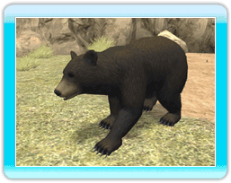

●León asiático
Este carnívoro de los bosques suele ir en
pequeñas manadas, pero caza en solitario.
●Cebra de Grevy
Este herbívoro con rayas vive en la sabana
o en regiones semidesérticas. Pasa la mayor
parte del tiempo comiendo.
●Hipopótamo
Este gran carnívoro vive en las latitudes
inferiores de África y pasa mucho tiempo en el
agua. Puede permanecer unos 5 minutos
debajo del agua.
●Panda
gigante
Este popular herbívoro habita en los bosques
de bambú. Pasa la mayor parte del día
comiendo hojas de bambú.
●Elefante africano Este enorme herbívoro vive en la sabana o en
bosques. Se baña frecuentemente para que el
calor no estropee su piel.
●Armadillo de 3 bandas
Este pequeño herbívoro habita en la sabana y
en zonas boscosas. Solo mide 20 cm y se
hace una bola para protegerse de los
depredadores.
 ●Oso negro americano
Este herbívoro suele vivir en bosques y se le
da muy bien trepar a los árboles.
●Tapir
malayo
Este herbívoro suele habitar en bosques
cercanos al agua o en zonas húmedas. Viajan
solos o en parejas.